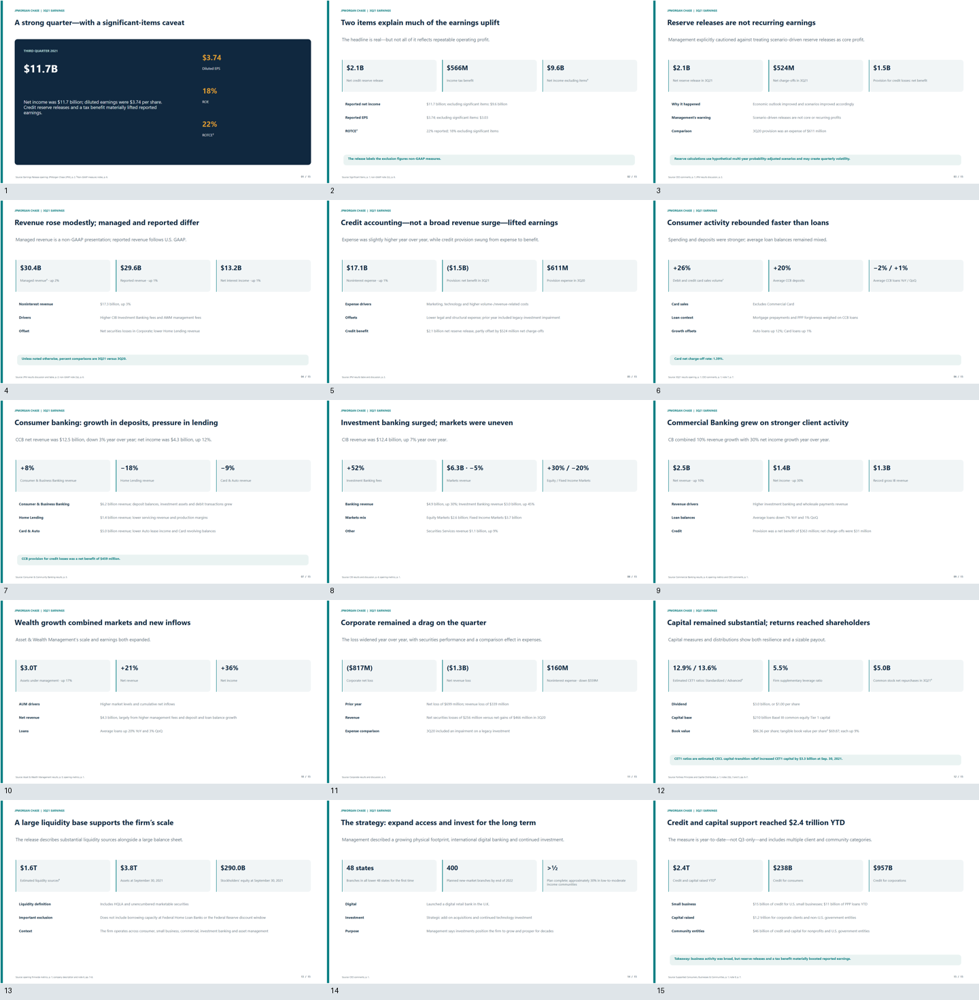
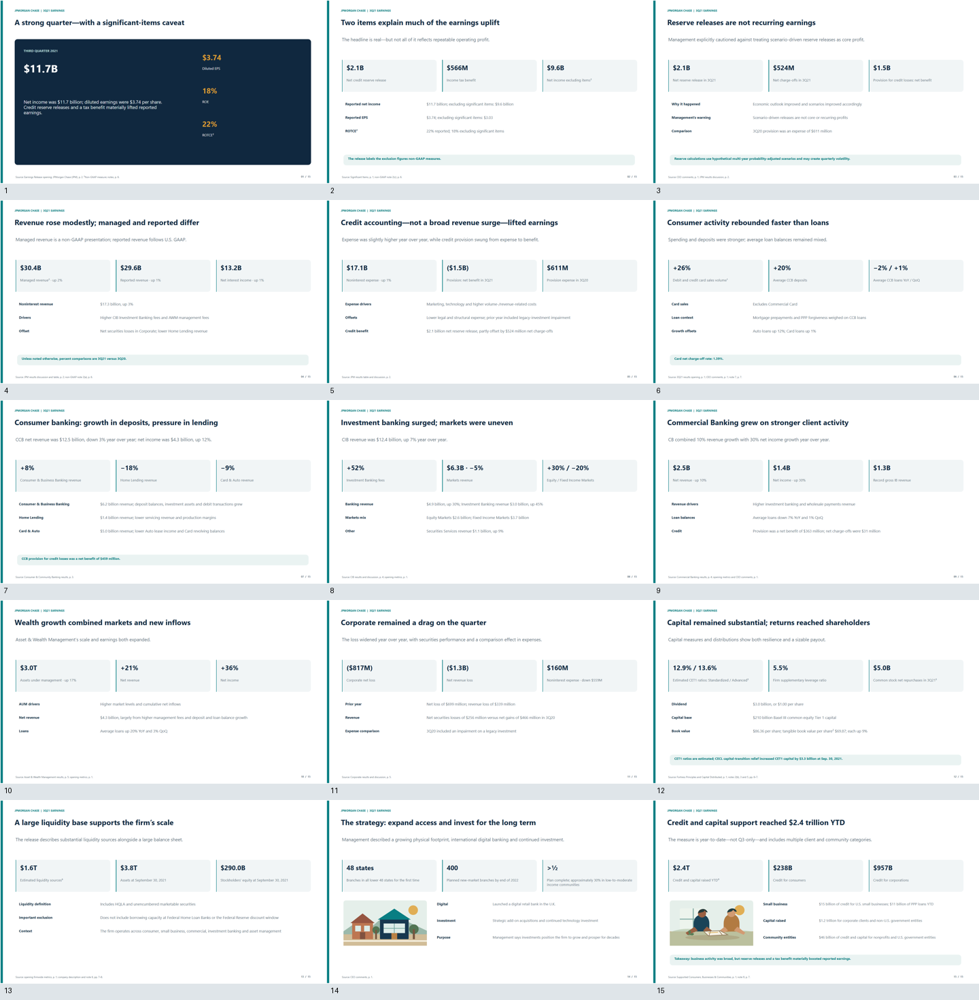
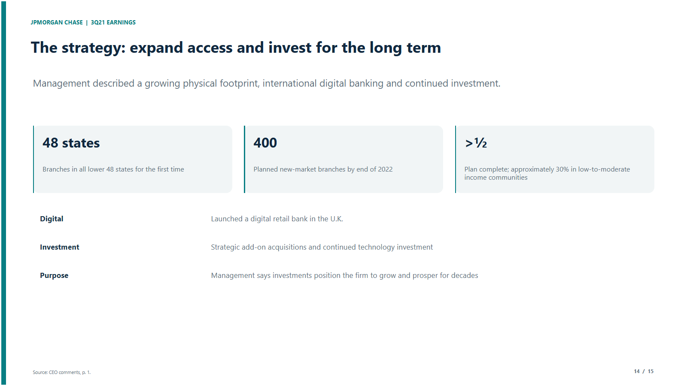
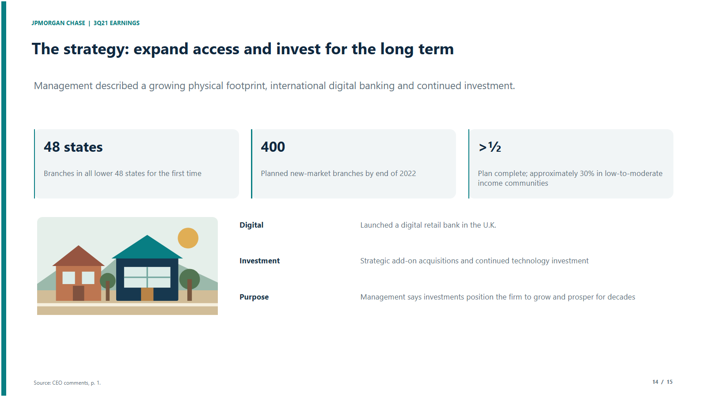

Agent 塑造 prompt 与 loop
Agent 可以在任务中改写行为指引与循环逻辑，让执行方式适应当前任务及其反馈。
AUTHOR · REVISE · USEAgent-native self-evolution 让 Agent 在推进真实任务时设计和修改自己的 prompt 与 loop，创建、修订并沉淀可复用的 tools、skills、memory 与 subagents。Harness 组件由 runtime 组合成 Agent 正在使用的执行环境。
Agent 拥有任务判断与组件去留；runtime 负责装配并让组件进入实际执行。
Agent-native self-harness 把组件的创作权与使用权留给 Agent，把装配、暴露和版本执行交给 runtime。
Agent 可以在任务中改写行为指引与循环逻辑，让执行方式适应当前任务及其反馈。
AUTHOR · REVISE · USE工具、skill、memory 与 subagent 可以被创建、修订、复用或退役，继续服务后续任务。
TOOLS · SKILLS · MEMORY · SUBAGENTSRuntime 将有效组件组织到 Agent 的执行上下文，让自建能力可调用并把运行证据返回给 Agent。
COMPOSE · EXPOSE · ROUTE同一次 JPMorgan Chase 3Q21 演示稿任务中，Agent 先发现问题，再创建、修改和调用组件。六张卡片概括每个阶段；下方工作台逐阶段回放推理轨迹、harness 文件与 PPT 工作区的同步变化。
组件目录为空。Agent 只有基础 loop：读取任务、调用模型、观察结果。
建页步骤被写成 builder。v1 调用失败，修订为 v2 后生成首版 15 页。
审阅指出第 14 页只有文字和 KPI 卡片，整套稿件没有插图。
builder 更新到 v5 并支持插图；Agent 新建两个检查程序验证 v004。
验收程序迭代到 v5，并保存为 skill；发布工具从 v004 导出 HTML。
Agent 保持已批准的 deck 不变，新增只读审阅角色和对应 prompt。
运行开始时，harness 目录为空。Agent 只有基础 loop：读取任务、调用模型、观察结果，再决定要沉淀什么。
组件目录返回 No named programs
先理解材料，再决定沉淀什么方法
暂不保存组件，先调用 list_programs 确认现状
工作区只有任务说明和原始业绩材料
第 1 批开始，组件目录没有命名程序
Agent 调用 list_programs 检查可用程序
（空）（空）（空）（空）（空）Agent 先让 research 整理叙事，再把 15 页的构建过程写成 earnings_deck_builder。第一次调用失败后，它立即修改并生成首版渲染。
research 给出 15 页叙事；图像角色未返回图片
页面结构重复，适合交给程序生成
新增 builder v1，失败后修订为 v2
得到 v001：15 页，0 张插图，0 个边界告警
整理 15 页业绩叙事
图像生成没有返回图片
新增 earnings_deck_builder
调用失败：run() 缺少 env 参数
修订后调用成功，生成 15 页

（空）（空）earnings_deck_builder.pyv2新增调用# 把业绩故事数据生成 15 页幻灯片场景
research调用# 阅读业绩材料，提出 15 页叙事结构
visual_asset调用# 构思插图并调用图像生成
design_review# 检查渲染页面中的视觉问题
（空）设计审阅指出第 14 页只依赖文字和 KPI 卡片，整套稿件也没有插图。Agent 决定修改可复用的版式与故事呈现方式。
design_review：第 14 页缺少视觉叙事
问题来自可复用模板，应该修改生成方法
调用 design_review；审阅结论记入 memory
v001 被标记为需要修订
v001 渲染完成：15 页，0 张图片，无告警
指出第 14 页缺少图像与视觉变化
选择 revise，继续修改而非接受首版
（空）（空）# 把业绩故事数据生成 15 页幻灯片场景
research# 阅读业绩材料，提出 15 页叙事结构
visual_asset# 构思插图并调用图像生成
design_review调用# 检查渲染页面中的视觉问题
v001-review.md新增Agent 将 builder 连续更新到 v5，放大标签与引用，并支持故事插图。随后它创建两个检查程序，用来判断新渲染是否满足要求。
审阅反馈：缺少插图，标签与引用偏小
修改生成方法，同时为质量判断建立工具
builder v2 → v5；新增两个验收工具
v004：15 页，2 张内嵌插图，0 个告警
builder 加入插图位与更大的标签
builder 连续修订到 v5
v003 渲染完成：15 页，2 张图片
新增 acceptance_check
新增 deck_acceptance v1
引用、告警、插图、导航与打印全部通过

（空）（空）earnings_deck_builder.pyv5更新调用# 把业绩故事数据生成 15 页幻灯片场景
acceptance_check.pyv2新增调用# 检查页数、引用、告警、插图、导航与打印
deck_acceptance.pyv1新增调用# 对演示稿做一次独立的程序化检查
research# 阅读业绩材料，提出 15 页叙事结构
visual_asset# 构思插图并调用图像生成
design_review# 检查渲染页面中的视觉问题
v001-review.md保留v004-check.md新增Agent 将验收程序迭代到 v5，并保存为可复用 skill。随后它创建 publish_deck_html，从已验证的 v004 导出自包含 HTML，再次运行验收。
v004 已可读，需要可重复的放行标准
把检查过程保存为 skill，并补充发布工具
acceptance v3 → v5；新增 skill 与 publisher
生成 deck.html，验收保持 PASS
验收项加入键盘导航与打印分页
保存 acceptance_check skill
新增 publish_deck_html
从 v004 导出 131,364 字节的自包含 HTML
deck.html 验收通过
（空）# 保存可复用的交付验收流程
# 把业绩故事数据生成 15 页幻灯片场景
acceptance_check.pyv5更新调用# 检查页数、引用、告警、插图、导航与打印
# 对演示稿做一次独立的程序化检查
publish_deck_html.pyv1新增调用# 把已验证的渲染导出为自包含 deck.html
research# 阅读业绩材料，提出 15 页叙事结构
visual_asset# 构思插图并调用图像生成
design_review# 检查渲染页面中的视觉问题
v001-review.md保留v004-check.md保留deck-check.md新增Agent 没有继续修改已批准的 deck，而是新增只读审阅角色和对应指令，并继续调用验收工具确认交付状态。
正式交付动作要求验收绑定
保持成品不变，增加独立证据审阅
新增 auditor agent 与 prompt
成品保持 v004；验收工具继续返回结果
说明不再修改已批准的 deck，转为独立审阅
新增只读审阅角色与对应 prompt
第 11 批再次检查交付物
第 12 批再次检查交付物
# 约束审阅角色只读取证据，给出 pass / fail
# 保存可复用的交付验收流程
# 把业绩故事数据生成 15 页幻灯片场景
# 检查页数、引用、告警、插图、导航与打印
# 对演示稿做一次独立的程序化检查
# 把已验证的渲染导出为自包含 deck.html
research# 阅读业绩材料，提出 15 页叙事结构
visual_asset# 构思插图并调用图像生成
design_review# 检查渲染页面中的视觉问题
# 只读交付审阅角色，不修改已批准的 deck
v001-review.md保留v004-check.md保留deck-check.md保留batch11-12.md新增第 14 页从文字与 KPI 卡片，变为带内容插图的版本。成品保留 15 页、来源引用和零渲染告警。
打开 deck.html ↗

research、visual_asset、design_review 三个角色由 demo 配置提供（demo/ppt-roles），不是 Agent 创建，页面从第 01 阶段起列在 agents/ 中。memory 栏按版本轮次整理 design_review 与 acceptance_check 的结论；本次运行没有保存 memory 组件。阶段说明依据 lifecycle、组件调用、审阅和渲染记录整理，是行动摘要，不是模型内部思维的逐字记录。本次运行共 328 批，页面只展示前 12 批；运行未调用正式交付动作，独立 HTML 交付包在运行结束后另行整理。
按原始任务 loop、每个实验阶段和反馈窗口回放 agent 创建的 harness、Python 工具脚本与 workspace 交付件。工具代码按本 demo 口径包含 agent 写入并执行的 Python 脚本；正式登记的组件与实验脚本分开说明。
数据来自运行目录 `s6e11-agent-20261106-011741` 的提交账本、Python 执行账本、harness 组件文件与反思记录。CV 是本地交叉验证结果，LB 是 Kaggle public leaderboard 回执；未提交的 CV 不代表 Kaggle 分数。当前阶段显示最近一次有记录的执行状态，运行中结果会继续变化。
两段均为 15 秒生成视频：左侧由基线 Codex 生成，右侧由 Agent 自进化方法生成，均使用 GPT-6.1 Sol。页面直接播放原始 1080p MP4，保留音轨，不二次压缩或转码。这是两种方法的成品展示，不是受控对照评测。
Demo 1 展示同一次 PPT 运行的前 12 个执行批次。页面将这些批次归纳为 6 个阶段，并对齐 harness 组件变化与工作区渲染变化。
源码与展示文件 ↗